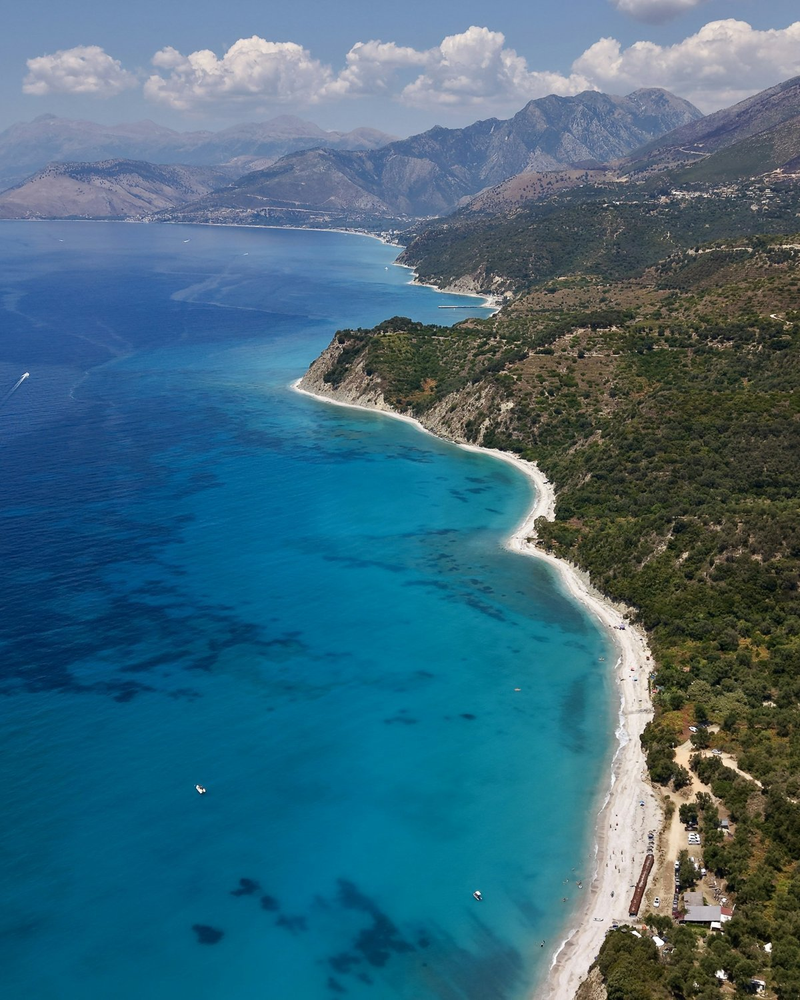

Пляж
Уточните покрытие, вход в воду, расстояние от номера и наличие тенистых мест.
Море, к которому хочется возвращаться.
Пляж, прогулки и время вместе. Начните с того, какой берег, питание и размещение подходят вашей семье.
Спланировать поездку
Если хочется проводить больше времени вместе и чередовать пляж с небольшими прогулками.
Большая территория отеля или компактное размещение ближе к прогулкам? Выбирайте то, чем действительно будете пользоваться.
Пример свободного плана для обсуждения, а не программа готового тура.
Завтрак, прогулка к морю и пляж в удобном для семьи ритме.
Добавьте прогулку или экскурсию, оставив время на дорогу и отдых.
Заранее решите, нужны ли развлечения в отеле или тишина рядом с номером.
Уточните покрытие, вход в воду, расстояние от номера и наличие тенистых мест.
Сравните не только название номера, но и спальные места, площадь и расположение.
Уточните, что входит в выбранный вариант питания и подходит ли меню детям.
Эти вопросы попадут в ваш готовый план поездки.
Составить мой планФотографии иллюстрируют направления. Наличие туров, актуальную стоимость и условия на выбранные даты уточняйте у агентства.